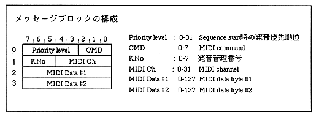

Support for actual MIDI events
CMD value | corresponding MIDI Event |
|---|---|
0 | (80h-8Fh) Note Off Event |
1 | (90h-9Fh) Note On Event |
2 | (A0h-AFh) After Touch |
3 | (B0h-BFh) Control Change |
4 | (C0h-CFh) Program Change |
5 | (D0h-DFh) Channel Pressure |
6 | (E0h-EFh) Pitch Wheel |
7 | (F0h-FFh) System Massage |
Advantages ・ Real-time control that cannot be previously stored in sequence data is possible. ・ No need to create data from sequence creation to compression. -Since compression / decompression processing can be omitted, no additional processing is required.Cons